Verschränkung Kapitel B:
Wie werden verschränkte Photonen erzeugt?
In unserem Experiment entstehen verschränkte Photonenpaare in einer Kombination aus zwei nichtlinearen Kristallen [Kwi99]. Auf dieser Seite wird im ersten Absatz erläutert, wie nicht verschränkte Photonenpaare in einem einzelnen Kristall entstehen und welche Polarisation diese haben. Im zweiten Absatz geht es um die Kombination von zwei Kristallen. Erst mit dieser Kombination können in der Polarisation verschränkte Photonenpaare erzeugt werden.
Photonenpaare aus einem Kristall
In einem nichtlinearen Kristall entsteht aus einem vertikal polarisierten Photon der Wellnelänge 405nm unter Energie- und Impulserhaltung zwei horizontal polarisierte Photonen der Wellenlänge 810nm (siehe unter Grundlagen und Koinzidenzen). Der Prozess wird als parametrische Fluoreszenz bezeichnet. Die beiden parallel zueinander polarisierten Photonen werden aus dem Kristall auf einem Kegel emittiert (Abb. 1 links). Mit Hilfe einer Spezialkamera* können Schnittbilder durch den Kegel sichtbar gemacht werden (Abb. 1 rechts). Die Photonenpaare werden auf dem Kegel immer diagonal zueinander emittiert. Der Zustand wird mit der folgenden Wellenfunktion beschrieben:
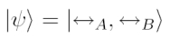
Der Öffnungswinkel des Kegels kann durch Drehung des Kristalls senkrecht zu seiner optische Achse verändert werden (Video 1). Bei jedem der 40 Einzelbilder des Videos wurde der Kristall um ca. 0,1° gedreht. Die Spezialkamera* kann nur die Intensität und nicht die Farbe des Fluoreszenzlichts wahrnehmen. Die Darstellung der Bilder erfolgt somit in Falschfarben. Die Bilder wurden durch einen optischen Filter photographiert, der nur Licht der Wellenlänge zwischen 810±10nm transmittiert. Am Ende des Videos ist die Energie- und Impulserhaltung (Phasenanpassung) des Erzeugungsprozesses nicht mehr erfüllt - das Fluoreszenzlicht kann nicht mehr wahrgenommen werden.
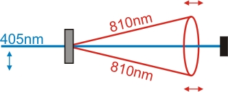 |
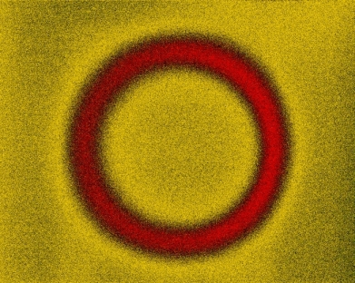 |
Abb. 1 links: Skizze zur Entstehung der Photonenpaare mit gleicher Polarisation
Abb. 1 rechts: Photo des Kegelschnitts (Falschfarben, Filter 810±10nm, Belichtung: 0,5s)
Video 1: Drehung des Kristalls senkrecht zur optischen Achse (Start drücken).
Zur richtigen Darstellung wird der Flash-Player 9 benötigt [Download].
Photonenpaare aus zwei Kristallen
Um in der Polarisation verschränkte Photonenpaare zu erzeugen, wird eine Kombination aus zwei gleichen nichtlinearen Kristallen (Abb. 2) benötigt [Kwi99] . Die beiden Kristalle werden direkt hintereinander aufgestellt (Abb. 3). Der zweite Kristall muss zum ersten Kristall um 90° gedreht werden. Ist die Polarisation des blauen Lasers vertikal, so werden die horizontal polarisierten Photonenpaare im ersten Kristall erzeugt (Abb. 4 links). Ist die Polarisation des blauen Lasers horizontal, so werden die vertikal polarisierten Photonen im zweiten Kristall erzeugt (Abb. 4 mitte). Ist die Polarisation des Lasers diagonal, so werden Photonenpaare entweder im vorderen oder im hinteren Kristall erzeugt (Abb. 4 rechts). Es ist extrem unwahrscheinlich, dass gleichzeitig Photonenpaare im vorderen und im hinteren Kristall entstehen. In Abb. 4 rechts können die beiden Kegel deutlich unterschieden werden. Verschränkung liegt erst vor, wenn beide Kegel ununterscheidbar überlagert werden. Dies kann mit dünnen Kristallen und gleichen Öffnungswinkel der beiden Kegel realisiert werden. Die Justierung der Öffnungswinkel der beiden Kegel erfolgt über die Drehung des jeweiligen Kristalls (siehe Video 1). In Abb. 5 liegen beide Kegel direkt übereinander. Es kann nicht mehr unterschieden werden aus welchem Kegel die Photonenpaare stammen. Somit kann auch nicht mehr unterschieden werden, welche Polarisation die einzelnen Photonenpaare haben. Die Photonenpaare befinden sich in einem undefinierbaren Polarisationszustand. Alle Photonenpaare die aus dem Kristall emittiert werden sind verschränkt. Der Verschränkungszustand kann mit der folgenden Formel beschrieben werden:
.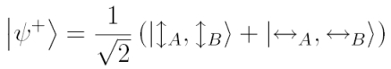.
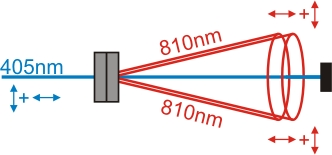
Abb. 2: Kristallanordnung nach Kwiat: zwei um 90° zueinander gedrehte Kristalle
werden direkt hintereinander angeordnet.
Abb. 3 links: Verschränkungskristall mit blauem Laserlicht.
Abb. 3 rechts: Zwei dünne Kristalle stehen um 90° gedreht direkt hintereinander.
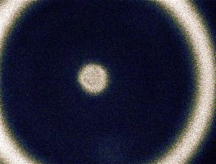 |
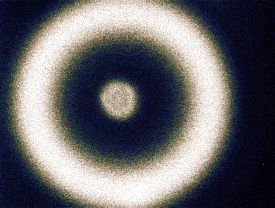 |
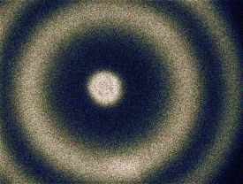 |
Abb. 4 links: Laserpolarisation vertikal, Anregung im ersten Kristall, Photonenpaare horizontal polarisiert.
Abb. 4 mitte: Laserpolarisation horizontal, Anregung im zweiten Kristall, Photonenpaare vertikal polarisiert.
Abb. 4 rechts: Laserpolarisation diagonal (45°), Anregung in beiden Kristall, beide Kegel unterscheidbar
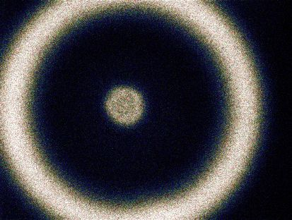
Abb. 5: Beide Kegel liegen übereinander:
Verschränkte Photonenpaare
Verschränkungsgrad erhöhen
Verschränkung liegt vor, wenn beide Kegel ununterscheidbar sind. Die beiden Kristalle haben jedoch eine Länge von 0,5mm und sind durch einen kleinen Luftspalt voneinander getrennt (Abb 3 rechts). Im Randbereich der Kegelüberlagerung können Photonenpaare dem hinteren Kristalls zugeordnet werden (Abb. 6). Wird der gesamte Kegelausschnitt gemessen, sind aufgrund der Unterscheidbarkeit nur ca. 80% aller Photonen verschränkt. Mit einer Iris vor jedem Detektoren werden nur die Photonen vom Detektor erfasst, die aus dem Schnittbereich der beiden Kegel stammen (Abb. 7). Je kleiner die Iris, desto größer ist der Verschränkungsgrad. Gleichzeitig wird allerdings auch die Ereignisrate vermindert. Mit sehr kleinen Öffnungen sind in unserem Experiment bis zu 99% aller Photonen verschränkt.
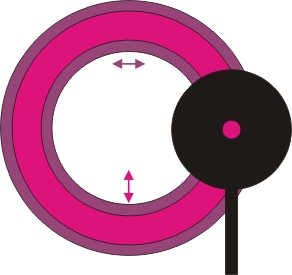
Abb. 6: Im Randbereich der beiden Kegel sind Photonen unterscheidbar.
Auswahl durch eine Iris.
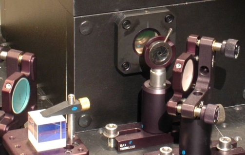
Abb. 7: Verkleinerte Iris vor einem Detektor.
*) Die Bilder der Fluoreszenzringe wurden mit der gekühlten Infrarotkamera "Sensicam" der Firma PCO-Imaging aufgenommen. Die Kamera stand ohne Objektiv nur wenige Zentimeter vom Kristall entfernt. Die Belichtungszeit für die Bilder lag zwischen 0,5-10s. Wir bedanken uns bei der Fimra PCO für die freundliche Leihgabe.
Zum Kapitel C: Was sind die vier Bell-Zustände? [klick]
Zurück zur Übersicht [klick]
Autor: P. Bronner, Mai 2008